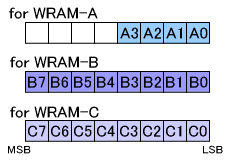

#include <twl/mi.h>u8 MI_GetFreeWramSlot( MIWramPos wram );(define)#define MI_GetFreeWramSlot_A();#define MI_GetFreeWramSlot_B();#define MI_GetFreeWramSlot_C();| wram | 情報を取得するWRAM |
指定のWRAMの中で、どのプロセッサにも予約されていなく、確保もされていないスロットの情報を返します。WRAM-A に対してはスロット0〜3、WRAM-B と WRAM-C に対してはスロット0〜7 の情報が返ります。
指定のWRAMに対し、どのプロセッサにも予約されていなく、確保もされていないスロットの情報を取得します。
なお、一つのスロットについて割り当てられているかを調べる関数としては MI_IsWramSlotUsed() が用意されています。
返り値について
u8 値の下位ビットより順に スロット0, スロット1,... を表しており、ビットが1となっているスロットは予約も確保もされていないという意味です。
例えば、MI_GetFreeWramSlot( MI_WRAM_B ) の返り値が 0xC0 ( 2進数で 11000000 )だった場合、WRAM-B のスロット 0,1,2,3,4,5 は どこかのプロセッサに予約されているか、確保されていることを表し、スロット
6,7 はどこにも予約や確保されていないことを表します。

WRAM種類を関数名に含めた便利関数
MI_GetFreeWramSlot_A(...) は MI_GetFreeWramSlot( MI_WRAM_A, ... ) の define です。
MI_GetFreeWramSlot_B(...) は MI_GetFreeWramSlot( MI_WRAM_B, ... ) の define です。
MI_GetFreeWramSlot_C(...) は MI_GetFreeWramSlot( MI_WRAM_C, ... ) の define です。
ARM9が管理している WRAMマネージャが返り値を決定します。
ARM7からは PXI を通して ARM9 から値を取得します。
また、この関数は MI_GetAllocatableWramSlot() のプロセッサ種類に MI_WRAM_FREE を指定することで実装されています。
概要(ワークRAM)、MI関連の定数
MI_GetAllocatableWramSlot, MI_GetUsedWramSlot
MI_IsWramSlotUsed
2008/05/29 初版